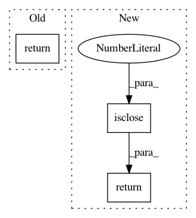

10419d81133653871a4e55dc96a7b1ff6b78e789,geomstats/geometry/riemannian_metric.py,RiemannianMetric,sectional_curvature,#RiemannianMetric#Any#Any#Any#,406
Before Change
inner_ab = self.inner_product(tangent_vec_a, tangent_vec_b, base_point)
normalization_factor = norm_a * norm_b - inner_ab ** 2
return sectional / normalization_factor
After Change
inner_ab = self.inner_product(tangent_vec_a, tangent_vec_b, base_point)
normalization_factor = norm_a * norm_b - inner_ab ** 2
condition = gs.isclose(normalization_factor, 0.)
normalization_factor = gs.where(
condition, EPSILON, normalization_factor)
return gs.where(~condition, sectional / normalization_factor, 0.)
In pattern: SUPERPATTERN
Frequency: 3
Non-data size: 3
Instances
Project Name: geomstats/geomstats
Commit Name: 10419d81133653871a4e55dc96a7b1ff6b78e789
Time: 2021-03-15
Author: nicolas.guigui@inria.fr
File Name: geomstats/geometry/riemannian_metric.py
Class Name: RiemannianMetric
Method Name: sectional_curvature
Project Name: pgmpy/pgmpy
Commit Name: f45d5b9ffffffbddda737f1dbf6b77993cc84163
Time: 2017-10-04
Author: zholin@microsoft.com
File Name: pgmpy/factors/distributions/CustomDistribution.py
Class Name: CustomDistribution
Method Name: is_valid_cpd
Project Name: geomstats/geomstats
Commit Name: 7515e0a7f42fe67fb4262147f41c1014afacb33c
Time: 2018-12-30
Author: ninamio78@gmail.com
File Name: geomstats/general_linear_group.py
Class Name: GeneralLinearGroup
Method Name: belongs